白为主 · 母版画廊
白化第四轮收紧后重拍(2026-07-23):地色被压到近纯白(彩度 ≤0.02、明度 ≈0.96),颜色只留在强调物件层——标号卡、导航、说明卡、插画。下面每张都是当前渲染实拍,底色可自行核验「都是白的」。
四门开场 · 白底核验
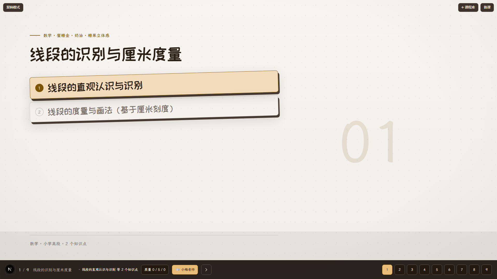
数学 · 暖白底 · source-reading
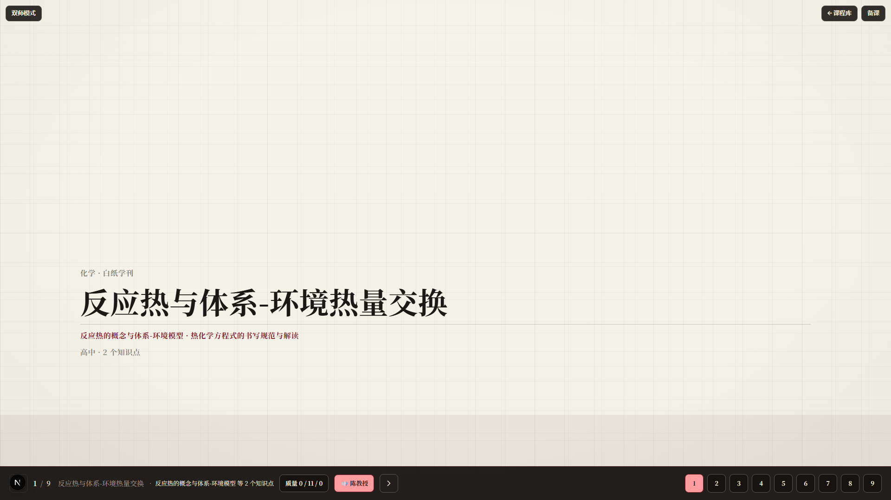
化学 · 白格纸 · teal 强调
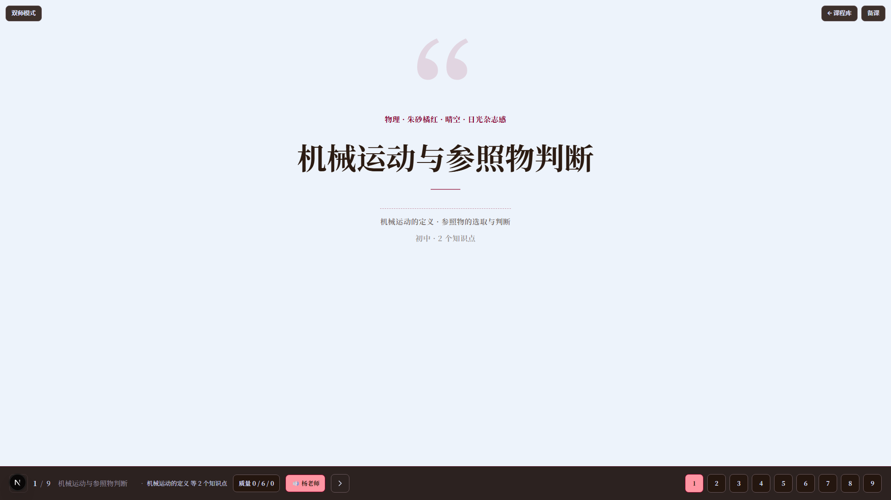
物理 · 冷白底 · cite 引言母版
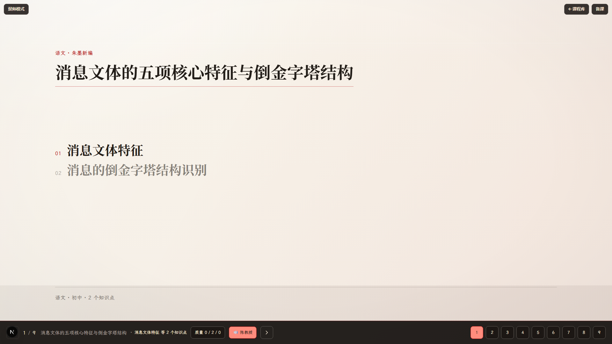
语文 · 暖白底
观察 · PPT 式版式(图辅文主)
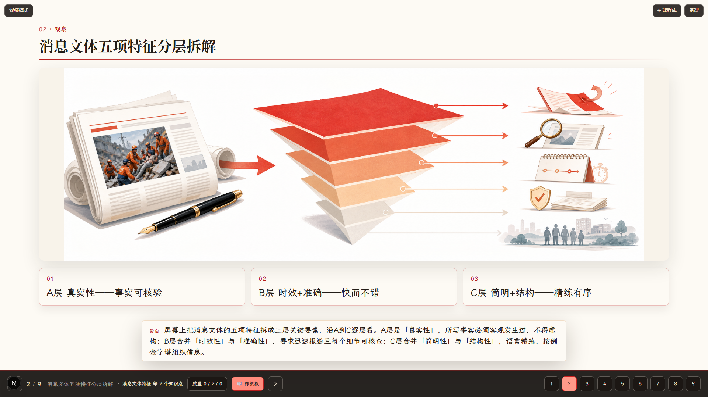
语文观察 · 大标题 + 整体配图 + 对齐说明卡,红色分层物件在白底上
引进母版 · 结构异质(harvest/layouts 榨取)
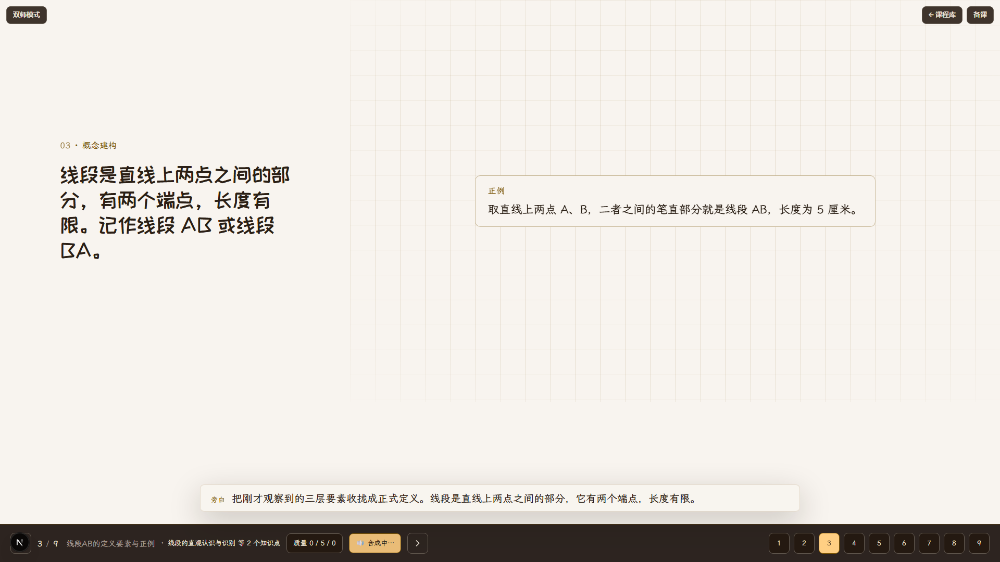
概念·GridDiagram
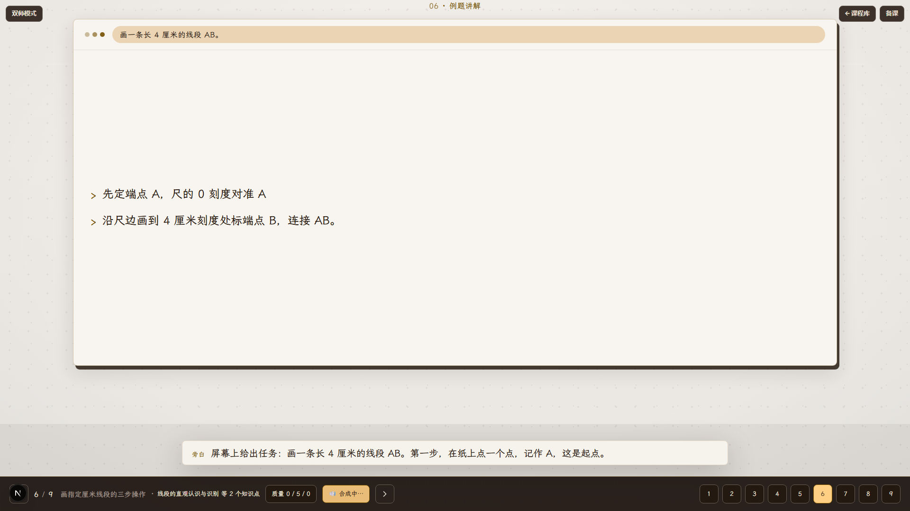
例题·WindowChrome
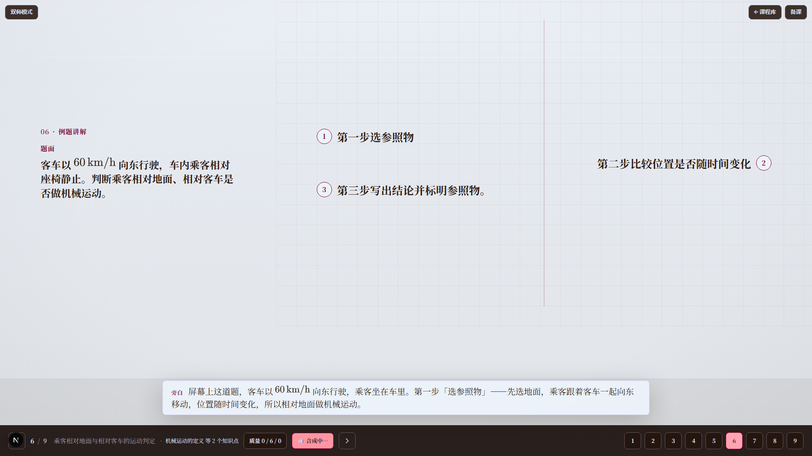
例题·GridFlow
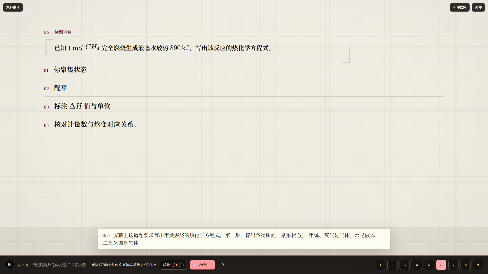
例题·Ledger
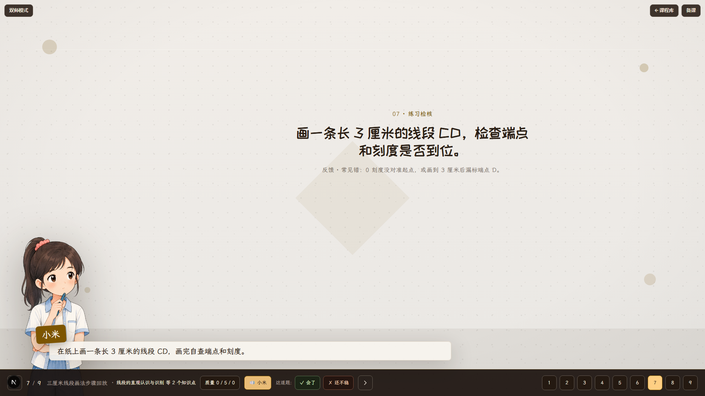
练习·Badge
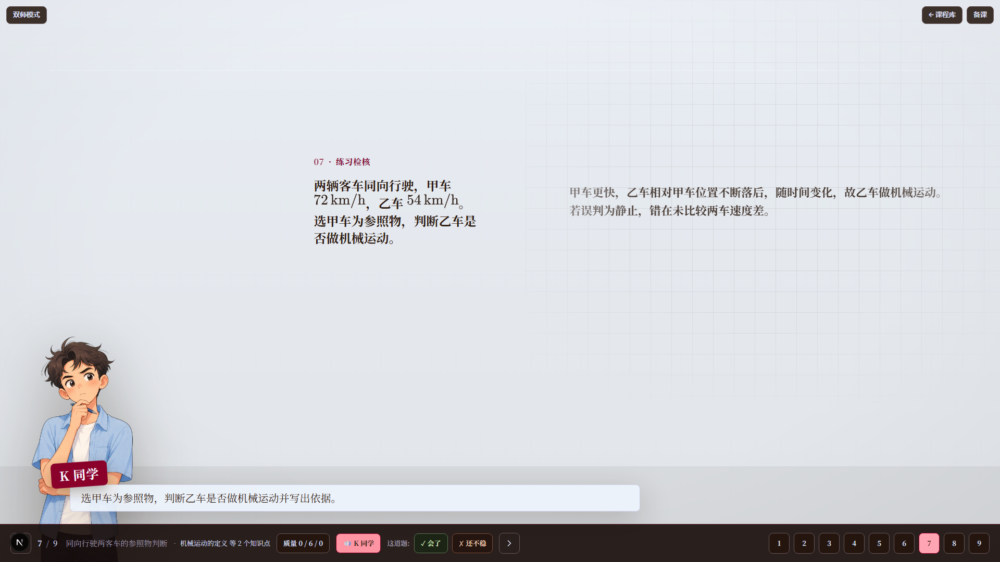
练习·GridPanel
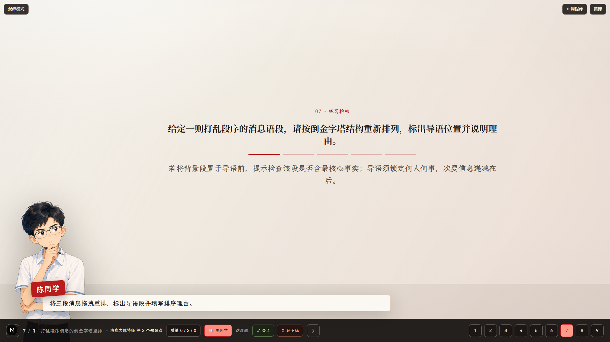
练习·Stage
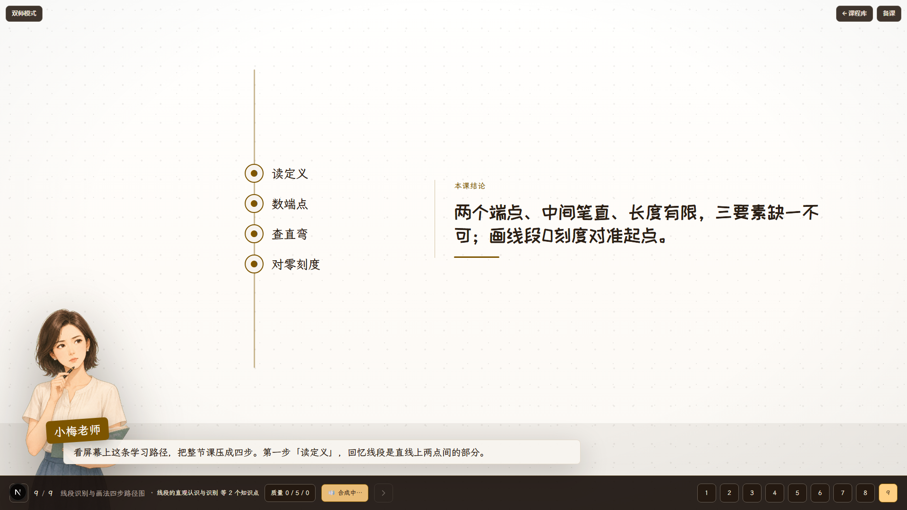
收束·Outline